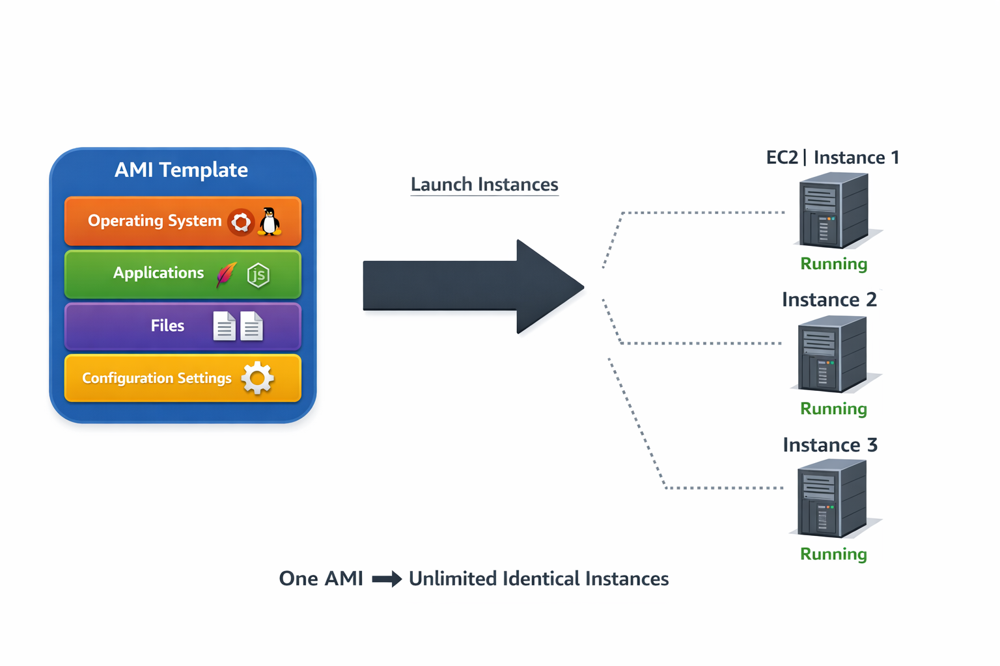

What is an AMI?
An Amazon Machine Image functions as a blueprint for EC2 instance creation. It encapsulates the complete software stack required to launch a virtual server, eliminating the need for manual OS installation and application configuration on each new instance.

Figure 1: AMI architecture - How a single template spawns multiple identical instances
AMI Components
Every AMI contains four essential elements:
| Component | Description | Technical Purpose |
|---|---|---|
| Operating System | Base OS (Linux distributions, Windows Server) | Provides kernel, system libraries, and runtime environment |
| Applications | Pre-installed software packages | Web servers, databases, development tools, or custom applications |
| Files | Configuration files, scripts, static content | Application-specific data, initialization scripts, certificates |
| Configuration Settings | System parameters, environment variables | Network settings, security configurations, service startup parameters |
AMI Use Cases
AMIs solve critical operational challenges in cloud infrastructure:
- Standardization: Ensure consistent environments across development, staging, and production by deploying from the same AMI
- Rapid Scaling: Launch hundreds of identical instances in minutes for auto-scaling groups or batch processing workloads
- Disaster Recovery: Maintain golden images for quick recovery; launch replacement instances immediately when failures occur
- Version Control: Create AMI snapshots at each release, enabling instant rollback to previous configurations
- Multi-Region Deployment: Copy AMIs across regions for global application distribution with identical configurations
💡 Technical Note: AMIs are region-specific resources. To deploy in multiple regions, you must explicitly copy the AMI to each target region. This regional isolation ensures compliance with data residency requirements.